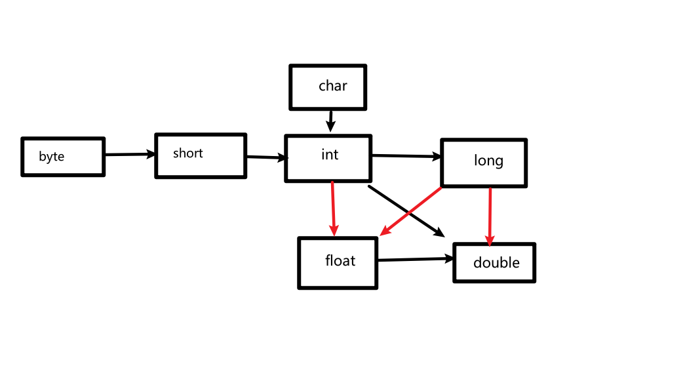
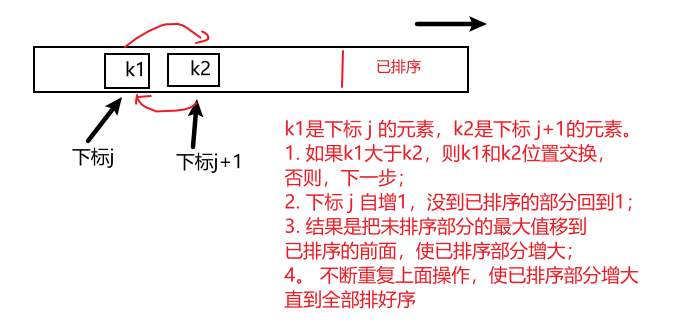

Java基础语法
文章目录
一、基本数据类型
Java的数据类型有基本数据类型（primitive）、类（包括枚举）、接口（包括注解）和数组，后三个类型有被称为引用类型（reference）。本文着重基本数据类型。Java中有8种基本数据类型，分别有4种表示整数的整型（byte、short、int、long）；2种表示浮点数的浮点型（float和double）；1种字符类型char；还有用于表示真或假的布尔类型boolean。
| 类型 | 范围 | 存储需求 | 默认值 |
|---|---|---|---|
| byte | -128 ~ 127 | 1 byte | (byte)0 |
| short | -32 768 ~ 32 767 | 2byte | (short)0 |
| int | -2 147 483 648 ~ 2 147 483 647(刚刚超过20亿) | 4byte | 0 |
| long | -9 223 372 036 854 775 808 ~ 9 223 972 036 854 775 807 | 8byte | 0.0L |
| float | 大约±3.402 823 47E+38F(有效位数6~7位) | 4byte | 0.0f |
| double | 大约±1.797 693 134 862 315 70E+308(有效位数为15为) | 8byte | 0.0d |
| char | ‘\u0000’ ~ ‘\uFFFF’ | 2byte | ‘\u0000’ |
| boolean | false,true | 1 byte | false |
1.1 声明变量和初始化
Java声明变量要先指定变量类型，再指定变量名，最后不要忘记分号结束。变量初始化会用到下面会讲的赋值运算符。
double salary = 0.0;
int size = 0;
long time = 0L;
boolean done = true;
标识符是对包、类、方法、参数和变量等要素命名时使用字符序列。其规则是
- 由字母、数字、下划线(_)和美元符号($)组成
- 必须以字母开头
- 区分大小写
- 长度不限制
- 不能使用Java保留字
还有一点虽然不是强制的，建议标识符命名要见名知意。
1.2 类型转换
数值类型之间是可以转换。

上面6条黑线表示的类型转换没有信息损失，而3条红线表示的类型转换可能精度丢失。 像没有信息损失的类型转换，Java是会自动帮我们实现转换的，这种类型转换叫做自动类型转换，也就是容量小的类型自动转换容量大的数据类型或者精度低自动转换精度高的数据类型。
而容量大类型转换容量小类型或者精度高自动转换精度低的数据类型，需要加上强制转换符的被称为强制类型转换，这种类型转换可能造成数据的溢出和精度的降低，使用时要小心。圆括号里面放要转换的类型就是强制转换符格式:(type)。
写法：
int i = 15616161;
short s = (short)i;
二、运算符
运算符用于连接值，计算出各种结果。
2.1 算数运算符
参与数字加、减、乘、除和取模（求余运算）的运算符分别是+, -, *, /和%。当参与除法运算的两个操作数都为整数时，表示整数除法；否则，表示浮点数除法，Java的整数除法是地板除，除法的结果小数位是会被截断的，如15/2等于7。相同的数分别用整数和浮点数表示来求余得到的结果可能不同，如：15%2等于，15.0%2等于7.5。需要注意整数除以0会产生异常，浮点数除以0则会得到无穷大或NaN结果。
2.2 自增自减运算符
Java借鉴C/C++的自增自减运算符，n++是先使用变量原来的值再加1，++n则是先加1再使用变量；n–与–n类似只不过是减1罢了。
int n = 2;
int m = n++; // m为2，n为3
int p = ++n; // p为4，n为4
2.3 赋值运算符
赋值运算符不只=号一个，一般把其他运算符放在=号左边也构成赋值运算符，像+=,-=,*=,/=,%=等等。
写法：
x += 4;
以上等价于
x = x + 4;
2.4 关系运算符
用于检测相等性，可以使用两个等号==。
写法：
15 % 2 == 0
上面得到的值为false。说明关系运算符操作的结果为布尔类型。
用于检测不相等有!=。
写法：
3 != 0
上面得到的值为true。
还有检测大小的小于<，小于等于<=，大于>，大于等于>=运算符。
2.5 逻辑运算符
逻辑运算符操作后得到的结果是布尔类型。逻辑运算符使用的表达式得到的结果必须是布尔类型，不能是整型1或0，否则语法是错误的，这与C/C++用法不同。
逻辑与&用法格式:
表达式 & 表达式
任意一边为false，结果为false。当两边同时都为true，结果才为true。
例如：
3 == 0 & 15 % 2 != 0
得到的值为false。要注意两个表达式都要执行，才能得出结果。
逻辑或|用法格式:
表达式 | 表达式
任意一边为true，结果为true。当两边都为false，结果才为false。
例如：
15 % 2 != 0 | 3 == 0
得到的值为true。要注意两个表达式都要执行，才能得出结果。
下面介绍更加高效的逻辑与和逻辑或运算符，也是比较常用的。
短路逻辑与&&用法格式：
表达式 && 表达式
任意一边为false，结果为false。当两边同时都为true，结果才为true。
例如：
3 == 0 && 15 % 2 != 0
虽然与逻辑与&得到的值同为false。但与逻辑与&不同是，有时候不需要两个表达式都执行，如果在&&前面的表达式操作得到false，那么&&后面的表达式不用得到执行，直接得到false结果。
短路逻辑或||用法格式：
表达式 || 表达式
任意一边为true，结果为true。当两边都为false，结果才为false。
例如：
15 % 2 != 0 || 3 == 0
虽然与逻辑或|得到的值同为true。与逻辑或|不同，有时候不需要两个表达式都执行，如果在||前面的表达式操作得到true，那么||后面的表达式不用得到执行，直接得到true结果。
逻辑否!用法格式：
!(表达式)
把表达式结果取反，当表达式为true时，结果为false；当表达式为false，结果为true。
例如：
!(15 % 2 == 0)
得到结果为true，本来15 % 2 == 0为false，取反得到true结果。
逻辑运算符通常会和使用关系运算符的表达式一起使用，常常放在条件判断语句中。
2.6 字符串连接符
将字符串连接符之前，将Java提供的字符串类String。它是Java类库给用户提供的一个类，属于引用类型，也是我们用到的第一个类，方便我们存取字符串和操作字符串。
字符串变量的声明与初始化，写法如下：
String s;
s = "I love Java!";
上面的第一句是变量声明，引用类型与基本类型的声明一样，都是变量类写在前，后跟变量，分号结束。初始化可以使用双引号把一段文字包围起来赋值给String变量。一般引用类型变量的赋值，要使用new表达式创建一个对象再赋给变量，像new String("I love Java!");。String类特殊，可以不使用new表达式，直接双引号把文字阔起来赋值给变量即可。
字符串连接符是+号，当+号两边任意一边操作数是字符串，+就是字符串连接符，起到字符串拼接的作用。
写法：
String s = "I love "+"Java"+11·;
s为"I love Java11"。字符串连接符会把非字符串类型转换为字符串类型再进行拼接，正如上方那样。
例如：
String s = 1+2+"00"+0;
s结果是3000（运算符运算顺序是从左到右的，如果有圆括号的情况下，优先执行圆括号里面的表达式）。1加2等于3，3接着字符连接符和字符串"00"，3转换成字符串"3"和"00"连接成"300"，其后是0，将其转换为"0"和前面的"300"拼接，最后为"3000"。
2.7 三目运算符
写法：
条件? 表达式1: 表达式2;
意思为如果条件为`true,返回表达1；否则返回表达式2。 例如：
x < y ? x : y;
上方会得到x和y中较小的哪个。
三、条件判断和循环分支
在命令式编程语言中，程序结构离不开条件判断和循环分支，又为流程控制。
3.1 if、if-else语句
一种条件判断语句，一般是用变量通过相等性检测(==)，不相等性检测(!=)，甚至区间范围的检测(>,>=,<,<=)，来选择执行路径
if语句，用法：
// 1
if (条件) {
...
表达式;
...
}
if语句圆括号中的条件，其实是表达式，它的结果必须式布尔类型，如果条件为真，花括号里面的表达式则会得到执行，否则不执行。 例如：
int x = 0;
if(x == 0) {
x = 100;
}
if-else语句，用法：
// 1
if (条件) {
...
表达式;
...
} else {
...
表达式;
...
}
// 2
if (条件1) {
...
表达式;
...
}
else if (条件2) {
...
表达式;
...
}
else if (条件3) {
...
表达式;
...
} ...
else if (条件n) {
...
表达式;
...
}
else {
...
表达式;
...
}
如果if的条件判断满足，执行if语句块；否则，执行else语句块。 由于if-else语句中else里面是可以嵌套if-else语句。因此if-else语句非常擅长判断值是否在某个区间范围，例如：
// 随机获取0 ~ 100之间的随机数
int goal = (int)(Math.random()*(100+1));
if (goal >= 90 && goal <= 100) {
System.out.println("优秀");
} else if (goal < 90) {
System.out.println("良好");
} else if (goal < 80) {
System.out.println("一般");
} else if (goal < 70) {
System.out.println("合格");
} else {
System.out.println("不合格");
}
System.out.println(...)这条语句是直接使用System内部的公共静态域，并调用它的普通成员方法，会在控制台打印内容。这里简单说一下静态方法的调用格式：类名.静态方法名(参数列表)，还有对于普通成员方法调用格式：对象名.成员方法名(参数列表)。System是java.lang包提供的类，out就是其内部有静态成员字段(或域)，println就是out的普通成员方法。使用静态方法和静态域，通常不需要自己创建对象，关联一个类就可以直接使用，但也可以关联对象来使用。在Java中方法是对象的成员，静态方法是类的成员。
3.2 switch语句
switch语句也是条件判断语句，不过是通过变量与常量的相等检测来选择执行路径。与if相比，灵活性没那么高，适合变量变化小的条件判断。
用法格式：
switch(变量) {
case 常量1: 表达式1或{语句块1};break;
case 常量2: 表达式2或{语句块2}:break;
...
case 常量n: 表达式n或{语句块n};break;
default: 表达式;break;
}
default是可选的，break也是不强制加的。若是变量匹配到某一个case中没有break，在这个case执行完后，不是结束switch语句，而是往下一个case中执行表达式或语句块，直到碰到第一个break才结束swith语句。如果忘记break，可能无意中执行下面几条case中的代码，这个非常要注意。switch圆括号里面可以放byte、short、int、String和枚举类型的变量。case中想要执行多条表达式，要用花括号{}括起来为一个语句块，才能执行多语句。
例如：
// 随机生成1到12的值
int month = 1 + (int)(Math.random() * (13 - 1));
switch(month) {
case 1:
case 2:
case 3: System.out.println("是春天"); break;
case 4:
case 5:
case 6: System.out.println("是夏天"); break;
case 7:
case 8:
case 9: System.out.println("是秋天"); break;
case 10:
case 11:
case 12:System.out.println("是冬天"); break;
default: System.out.println("出错了");break;
}
3.3 while循环
先判断条件，再执行循环语句块，当循环条件不满足时，结束循环。 用法格式：
while (条件) {
循环体;
}
例如：
int i = 0;
while (i < 6 ) {
System.out.println(i+1);
i++;
}
3.4 do-while循环
先执行一次循环，后判断条件，满足条件接着循环，不满足就结束。 用法格式：
do {
循环体;
} while (条件);
例如：
int j = 0;
do {
j = j + 2;
} while (j % 3 != 0);
System.out.println(j);
3.5 for循环
能够确定循环的次数的循环，通常用于遍历数组。
用法格式：
for(初始化参数; 判断条件 ;更新循环变量){
循环体;
}
例如：
for (int i = 1; i < 10; i++) {
for (int j = 1; j < 10; j++) {
System.out.print(j+"×"+i+"="+(j*i)+"\t");
}
System.out.println();
}
3.6 break与continue
break之前用于跳出switch语句，它还可以跳出循环，甚至能跳出多重循环（在需要跳出的循环前的某个一个位置作标记,格式：标记名:，然后通过break 标记名;退出标记的一层或多层循环）；而continue是跳出当前循环，进行下一次的循环, 它也可以停止当前多层循环，进入下一次循环，不过比较少用（在需要的跳出循环前的某个一个位置作标记,格式：标记名:，然后通过continue 标记名;跳出标记的一层或多层循环，不过进入下一次循环）。
例如：
outter: // 标记位置
while (true) {
int i = 0;
int j = (int)(Math.random() * (10));
while (i < 100) {
i = i + 1;
if (i == 40) {
break;
}
if (i == 37) {
/* 程序跳出最里面的循环，
跳到outter标记的循环，
重新进入下一次循环
*/
continue outter;
}
if (j == 5) {
// 完全跳出outter标记的循环
break outter;
}
i = i + 1;
}
}
四、接受输入
使用java.util包提供的Scanner类来接受用户从控制台传来的输入。 例如：
/* 由于它来自java.util包需要手动导包
而java.lang包是默认导入的，
所以使用System.out.println的时候不用导包
*/
Scanner input = new Scanner(System.in);
String question;
while (true) {
question = input.nextLine();
question.replace("吗", "");
question.replace("我", "我也");
question.replace("？", "!");
System.out.println(question);
}
Scanner有nextLine()方法读取一行输入。它还可以格式化输入，比如读取一个整数可以使用nextInt()，读取一个浮点数可以使用nextDouble()等。 要读取什么基本数据类型的数据，在next后面加对应的单词即可。next()方法是读取不包含空白字符的一串文字，如果一开始输入空格、回车、tab这些空白字符输入，这个方法是略过的这些字符的，继续等待输入，当我们输入非空白字符的一串文字后再输入空白字符才会结束输入。千万记住如果nextLine()方法，就不能使用next()及其格式化输入的方法，如：nextInt()、nextDouble()等。
如果先使用next()，后用nextLine()，nextLine()是接受不了任何输入。因为如果在之前的next()输入回车结束此次输入，换行符没有被读到还会在缓冲区，此时调用nextLine()，会接受缓冲区这个换行符，结束输入，所以nextLine()就没有作用。
五、数组
数组是相同类型数据的集合，它存储多个相同类型的数据，不过它的容量是固定的，一旦创建，长度就不能修改。
5.1 定义格式
有四种定义格式，在定义处初始化的数组有3种方式，还一种不在定义处初始化。
在定义处初始化：
// 1. 常见的初始化格式，并填充了数组的内容
数据类型[] a = { 元素1, 元素2, ..., 元素n };
// 2. 不常见的初始化格式，并填充了数组的内容
数据类型[] a = new 数据类型[]{ 元素1, 元素2, ..., 元素n };
// 3. 常见的初始化格式，但每填充了数组的内容
数据类型[] a = new 数据类型[数组长度];
不在定义处初始化：
数据类型[] a; // 4. 创建了数组的引用，但没有在内存分配数组空间
5.2 下标
数组a的下标范围是0到a.length-1(数组有一个成员变量length表示数组长度)。通过下标i，我们可以从数组a中取出元素，在数组变量名后加上方括号，括号里有下标，就取出该下标的元素。即a[i]。数组里的元素是可以修改的，如：a[i] = 数据内容;
int[] a = { 1, 3, 5, 7, 9};
System.out.println(a[2]); // 取下标2的数组元素，这里是5
a[2] = 0;// 修改下标2的数组元素，这里修改为0
5.2 求数组中最值
假设有个数组A，其长度为N，数组中的元素是可以比较大小的，即可以使用大于号，小于号，大于等于号，小于等于号这些运算符进行操作。 因为只有数据类型是可以比较出大小，数组求最大值和最小值才有意义。
求数组最大值的算法，伪代码如下:
max(A, N):
i ← 1
max ← 0
while i < N
if (A[i] > A[max])
max ← i
i ← i + 1
return A[i]
求数组最小值的算法，伪代码如下：
min(A, N):
i ← 1
min ← 0
while i < N
if (A[i] < A[min])
min ← i
i ← i + 1
return A[i]
java中完整代码如下：
public class Demo {
// 求数组最大值
public static int max(int[] a) {
int max = 0;
for (int i = 1; i < a.length; i++) {
max = a[max] < a[i] ? i : max;
}
return a[max];
}
// 求数组最小值
public static int min(int a) {
int min = 0;
for (int i = 1; i < a.length; i++) {
min = a[min] > a[i] ? i : min;
}
return a[min]
}
}
求其他类型数组的最值算法类似上面的算法，只不过是更换类型罢了
5.3 冒泡排序
升序的冒泡排序，操作的过程如下：

具体代码如下：
public class BubbleSort {
public static void sort(int[] a) {
int n = a.length;
for (int i=0; i<n-1; i++) {
for (int j=0; j<n-i-1; j++) {
if (a[j] > a[j+1]) {
int temp = a[j];
a[j] = a[j+1];
a[j+1] = temp;
}
}
}
}
}
降序的排序与升序的算法类型，只要把循环中的比较大小的条件调反即可。
5.4 二分查找
二分查找算法： 要查找的目标元素为target，数组元素已经升序排序。 如果数组序列长度为1，此数组的元素等于target，找到并返回下标;否则,未找到并返回-1； 如果数组序列长度大于1，数组的中间元素为mid： 如果target小于mid，将数组序列一分为二，对数组前半部分的序列进行二分查找算法； 如果target大于mid，将数组序列一分为二，对数组后半部分的序列进行二分查找算法； 如果target等于mid，找到找到并返回下标mid;
递归版本：
public class BinarySearch {
public static int search(int[] a, int target) {
if (a == null || a.length == 0) {
return -1;
}
return search(a, target, 0, a.length-1);
}
private static int search(int[] a, int target, int lo, int hi) {
if (hi == lo) {
if (a[lo] == target) {
return lo;
} else {
return -1;
}
}
int mid = lo + ((hi - lo)>>1);
if (target < a[mid]) {
return search(a, target, lo, mid-1);
} else if (target > a[mid]) {
return search(a, target, mid+1, hi);
} else {
return mid;
}
}
}
迭代版本：
public class BinarySearch {
public static int search(int[] a, int target) {
int lo = 0, hi = a.length-1;
int mid;
while (lo <= hi) {
mid = lo + ((hi-lo)>>1);
if (target > a[mid]) {
hi = mid - 1;
} else if (target < a[mid]) {
lo = mid + 1;
} else {
return mid;
}
}
return -1;
}
}
对降序排序的数组，进行的二分查找的算法与上面算法类似，把target与数组比较的大于号换成小于号，把小于号换成大于号即可。
5.5 多维数组
常见的多维数组是二维数组，二维数组本质是数组的数组。由于二维以上的数组，内部嵌套的数组层数过多，导致数组结构过于复杂且使用效率低下，不常使用。
不规则二维数组的的创建格式：
数据类型[][] a = new 数据类型[数组长度][];
for (int j=0; j<a.length; j++) {
a[j] = new 数据类型[一维数组长度]; // 一维数组的长度未定，根据需要定多长
}
规则二维数组,可以当作矩阵，其创建格式：
数据类型[][] a = new 数据类型[行长][列长];
二维数组的初始化
for (int i=0; i<a.length; i++) {
for (int j=0;j<a[i].length; j++) {
a[i][j] = 0;
}
}